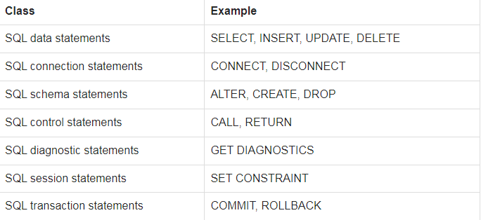

Some Key terms of SQL 2003
To know the key terms of SQL 2003, you should know the statement classes of both SQL 92 AND SQL 2003, since both are used to refer SQL features and statements.
In SQL 92, SQL statements are grouped into following categories:
Data manipulation : The Data Manipulation Language (DML) is the subset of SQL which is used to add, update and delete data.
Data definition : The Data Definition Language (DDL) is used to manage table and index structure. CREATE, ALTER, RENAME, DROP and TRUNCATE statements are to name a few data definition elements.
Data control : The Data Control Language (DCL) is used to set permissions to users and groups of users whether they can access and manipulate data.
Transaction : A transaction contains a number of SQL statements. After the transaction begins, all of the SQL statements are executed and at the end of the transaction, permanent changes are made in the associated tables.
Procedure : Using a stored procedure, a method is created which contains source code for performing repetitive tasks.
In SQL 2003 statements are grouped into seven categories which are called classes. See the following table :

PL-SQL, TSQL and PL/pgSQL
PL/SQL - Procedural Language/Structured Query Language ( PL/SQL) is Oracle Corporation's procedural extension language for SQL and the Oracle relational database.
TSQL - Transact-SQL (T-SQL) is Microsoft's and Sybase's proprietary extension to SQL.
PL/pgSQL - Procedural Language/PostgreSQL(PL/pgSQL) is a procedural programming language supported by the PostgreSQL.